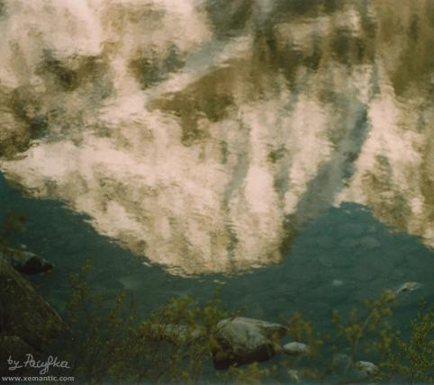

| Jerzy Liebert (1904-1931)
Jeziora górskie
Pośród skał twardych, złomów z granitu,
W dolinach górskie jeziora śpią,
W spowitych sennie ciszą i mgłą
Śnieg się przegląda ze szczytu.
W oprawie mocnej, w pierścieniu z głazów
Świecą ich sine, przejrzyste dna,
Potok nad nimi jak struna łka
Szmery miłosnych wyrazów.
Dzień wstaje z wolna, patrzy w zadumie,
Zanurza place różowe w toń,
Później ze wstydu podnosi dłoń,
Że pieścić lepiej nie umie. |

"Śnieg się przegląda ze szczytu."
Mięguszowiecki Szczyt WIelki odbity w Morskim Oku, fot. Pacyfka
|